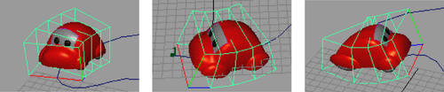

命令使对象运动路径中与曲线保持一致，从而在运动过程中弯曲和扭曲。变形由围绕对象的晶格创建，或者沿路径长度创建。

围绕对象的晶格示例
注： “流动路径对象”(Flow Path Object)命令围绕对象创建的晶格将忽略任何运动路径方向标记引入的效果。为获得最佳结果，请在将对象附加到路径之前先将其正确定位到轴，而不是在附加后使用“扭曲”(Twist)设置定位。有关信息，请参见将对象附加到运动路径。
- 选择已附加到运动路径的对象，然后选择“约束 > 运动路径 > 流动路径对象”(Constrain > Motion Paths > Flow Path Object) >
 。
。
- 选择是将晶格应用于“对象”(Object)还是“曲线”(Curve)。有关其他设置的信息，请参见流动路径对象选项。
- 单击“播放”(Play)查看动画。
注意： 如果对某个变换对象（多个几何体被分组到该对象下）设置了路径动画，并且使用晶格围绕对象选项应用了流，则有时某些几何体可能会“弹出”流晶格。
若要避免该问题，请执行下列操作之一：
- 在“属性编辑器”(Attribute Editor) 的“FFD”选项卡上，展开 “自由形式变形属性”(Freeform Deformation Attributes)，并将“外部晶格”(Outside Lattice)设置为“全部”(All)，使分组在变换对象下的所有几何体均受流晶格的影响。
- 选择流的 FFD 的基础晶格，并缩放使其变大，直到几何体“弹回”流晶格的内部。
若要删除晶格，请选择它，然后按 Delete 键。